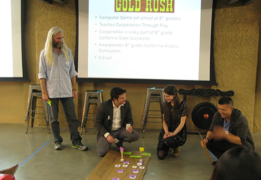
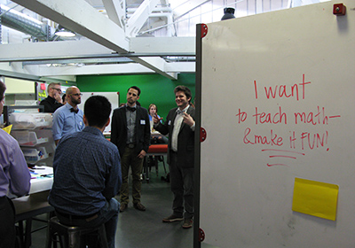
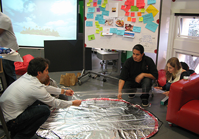
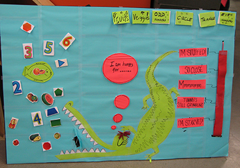
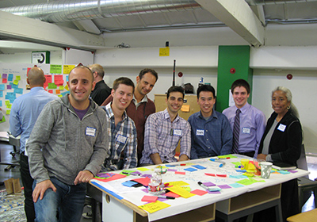

Six teams competed to design new educational games in just one day at a recent event hosted by GameDesk and Epicenter at Stanford University.

Lucien Vattel of GameDesk and Sydney Thomashow of Google play one of the six games created during the GameJam on March 2, 2013.
By Lauren Wilson
Originally posted on Peninsula Press
At 7 p.m. Saturday night, the final gong sounds. Six weary but enthusiastic teams scramble to put finishing touches on their products – educational games aimed at teaching K-12 students subjects from financial planning to conflict resolution.
They are contestants in a GameJam, part of Stanford University’s Entrepreneurship Week and co-sponsored by Epicenter, an endeavor that coordinates faculty and student programs to promote entrepreneurship and innovation in engineering.
Hosted at the Hasso Plattner Institute of Design, the GameJam featured experts from design firm IDEO and GameDesk, a gaming research and development organization. The teams had 10 hours to think of an idea for a brand new educational game and bring it to fruition. The event was part of GameDesk’s efforts to refresh and renovate the way people view the learning process.
“There’s a disconnect between what we call education and what I believe education really is which is to grow and deepen your understanding of how the universe works, how you can engage in it and who you are in it,” said Lucien Vattel, chief executive officer of GameDesk. He emphasized the effectiveness of all kinds of educational gaming from high tech to low tech to no tech.

Vattel also introduced Rethink, GameDesk’s free, online platform developed with AT&T. GameDesk hoped that some of the apps and games generated during the s GameJam could be good enough to be featured in the portal.Each group had five to seven people, a mix of designers, educators, entrepreneurs, programmers and Epicenter student ambassadors from around the nation. Though GameDesk has hosted GameJams before, this was the first one to incorporate an entrepreneurial element. In addition to a product, teams were required to pitch business and marketing plans.
“We want to bring innovation and entrepreneurship into undergraduate engineering education worldwide and a great way is through games, right?” said Leticia Britos Cavagnaro, associate director of Epicenter. “Everyone loves playing.”

Throughout the day, the groups received feedback from IDEO and GameDesk experts. The biggest challenge the teams faced was embracing simplicity. Thanks to the time constraint, contestants needed to pick ideas that could feasibly be developed within the limitations. Still, some initially struggle to pare down complicated, abstract ideas.“You’re not reinventing the wheel,” Vattel reminded them.
An explosion of multicolored post-its, Sharpies and empty coffee cups littered the six chaotic work stations. Gongs sounded each time the teams entered a new design phase progressing from brainstorming to prototyping to play testing. In the last quarter, Vattel added a twist – the teams could no longer use their whiteboards. They had to communicate their ideas through different mediums.

“Super, super, super stressed but it’s a good kind of pressure,” said contestant Maayan Yavne.Over the course of the day, little scribbles on the whiteboard slowly transformed into real-life prototypes. In one corner, two teammates held up a poster board cut into the shape of a computer screen, representing their game, Aspire, the goal of which is to teach students fiscal smarts. Players pick a career path such as rock star and make monetary decisions. If they go to the movies with their friends, their happiness meter goes up but their bank account goes down. How to make money? Investing or booking gigs. The game’s goal is to find a balance.

Across the way, Pizza Posse’s giant tinfoil pizza sits on the floor with wooden poles draped across it. The objective? To teach school-aged kids how fractions work. Almost all the other participants in the GameJam are college age or older, except for the Pizza Posse’s creative director, Joe Casente, just 11 years old.“I have a project that I’m doing on games and probability and so I just decided that I would like to come out here and design a game,” he said.
By 8:20 p.m., the contestants gathered in the d.school’s Studio One to present their demos. After deliberations, Aspire took the top prize, though each group received some sort of award.
While Pizza Posse didn’t come out on top, Casente said he has no regrets. The experience exceeded all his expectations: “It was definitely worth it.” Another perk: he got to stay up a full hour past his usual bedtime.